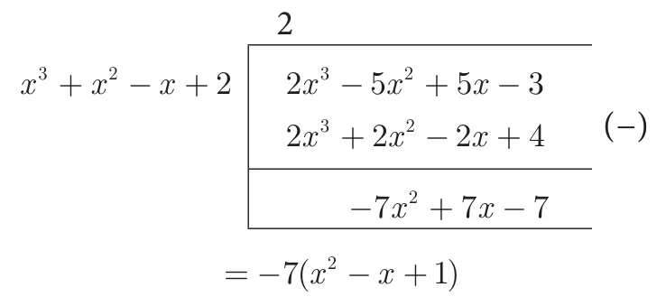
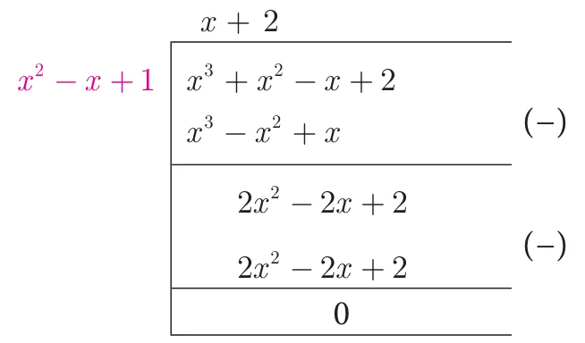
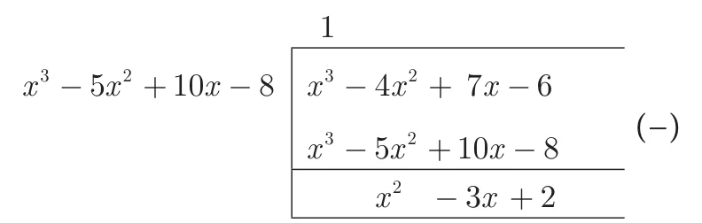
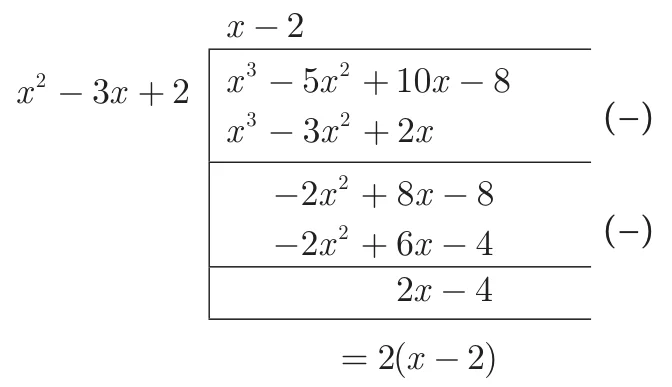
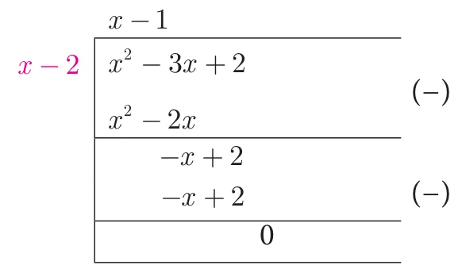
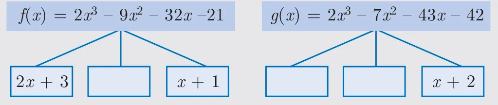

3.3.1 Greatest Common Divisor (GCD) or Highest Common Factor (HCF) of Polynomials
In our previous class we have learnt how to find the GCD (HCF) of second degree and third degree expressions by the method of factorization. Now we shall learn how to find the GCD of the given polynomials by the method of long division.
As discussed in Chapter 2, (Numbers and Sequences) to find GCD of two positive integers using Euclidean Algorithm, similar techniques can be employed for two given polynomials also.
The following procedure gives a systematic way of finding Greatest Common Divisor of two given polynomials \(f(x)\) and \(g(x)\).
- Step 1:
- First, divide \(f(x)\) by \(g(x)\) to obtain \(f(x) = g(x)q(x) + r(x)\) where \(q(x)\) is the quotient and \(r(x)\) is the remainder. Then, \(\deg[r(x)] < \deg[g(x)]\)
- Step 2:
- If the remainder \(r(x)\) is non-zero, divide \(g(x)\) by \(r(x)\) to obtain \(g(x) = r(x)q_1(x) + r_1(x)\) where \(r_1(x)\) is the new remainder. Then \(\deg[r_1(x)] < \deg[r(x)]\). If the remainder \(r_1(x)\) is zero, then \(r(x)\) is the required GCD.
- Step 3:
- If \(r_1(x)\) is non-zero, then continue the process until we get zero as remainder. The divisor at this stage will be the required GCD.
We write \(GCD[f(x), g(x)]\) to denote the GCD of the polynomials \(f(x), g(x)\).
Note
If \(f(x)\) and \(g(x)\) are two polynomials of same degree then the polynomial carrying the highest coefficient will be the dividend. In case, if both have the same coefficient then compare the next least degree’s coefficient and proceed with the division.
Progress Check
- When two polynomials of same degree has to be divided, __________ should be considered to fix the dividend and divisor.
- If \(r(x) = 0\) when \(f(x)\) is divided by \(g(x)\) then \(g(x)\) is called ________ of the polynomials.
- If \(f(x) = g(x)q(x) + r(x)\), _________ must be added to \(f(x)\) to make \(f(x)\) completely divisible by \(g(x)\).
- If \(f(x) = g(x)q(x) + r(x)\), _________ must be subtracted to \(f(x)\) to make \(f(x)\) completely divisible by \(g(x)\).
Example 3.10
Find the GCD of the polynomials \(x^3 + x^2 - x + 2\) and \(2x^3 - 5x^2 + 5x - 3\).
Solution
Let \(f(x) = 2x^3 - 5x^2 + 5x - 3\) and \(g(x) = x^3 + x^2 - x + 2\)

\(-7(x^2 - x + 1) \neq 0\), note that \(-7\) is not a divisor of \(g(x)\)
Now dividing \(g(x) = x^3 + x^2 - x + 2\) by the new remainder \(x^2 - x + 1\) (leaving the constant factor), we get

Here, we get zero remainder.
Therefore, \(\text{GCD}(2x^3 - 5x^2 + 5x - 3,\ x^3 + x^2 - x + 2) = x^2 - x + 1\).
Example 3.11
Find the GCD of \(6x^3 - 30x^2 + 60x - 48\) and \(3x^3 - 12x^2 + 21x - 18\).
Solution
Let, \(f(x) = 6x^3 - 30x^2 + 60x - 48 = 6(x^3 - 5x^2 + 10x - 8)\) and
\(g(x) = 3x^3 - 12x^2 + 21x - 18 = 3(x^3 - 4x^2 + 7x - 6)\)
Now, we shall find the GCD of \(x^3 - 5x^2 + 10x - 8\) and \(x^3 - 4x^2 + 7x - 6\)



Here, we get zero as remainder.
GCD of leading coefficients 3 and 6 is 3.
Thus, \(\text{GCD}\left[(6x^3 - 30x^2 + 60x - 48,\ 3x^3 - 12x^2 + 21x - 18)\right] = 3(x - 2)\).
3.3.2 Least Common Multiple (LCM) of Polynomials
The Least Common Multiple of two or more algebraic expressions is the expression of highest degree (or power) such that the expressions exactly divide it.
Consider the following simple expressions \(a^3b^2,\ a^2b^3\).
For these expressions \(LCM = a^3b^3\).
To find LCM by factorization method
- Each expression is first resolved into its factors.
- The highest power of the factors will be the LCM.
- If the expressions have numerical coefficients, find their LCM.
- The product of the LCM of factors and coefficient is the required LCM.
Example 3.12
Find the LCM of the following
- \(8x^4y^2,\ 48x^2y^4\)
- \(5x - 10,\ 5x^2 - 20\)
- \(x^4 - 1,\ x^2 - 2x + 1\)
- \(x^3 - 27,\ (x - 3)^2,\ x^2 - 9\)
Solution
- \(8x^4y^2,\ 48x^2y^4\)
First let us find the LCM of the numerical coefficients.
That is, \(\text{LCM}(8, 48) = 2 \times 2 \times 2 \times 6 = 48\)
Then find the LCM of the terms involving variables.
That is, \(\text{LCM}(x^4y^2, x^2y^4) = x^4y^4\)
Finally find the LCM of the given expression.
We conclude that the LCM of the given expression is the product of the LCM of the numerical coefficient and the LCM of the terms with variables.
Therefore, \(\text{LCM}(8x^4y^2, 48x^2y^4) = 48x^4y^4\)
- \((5x - 10),\ (5x^2 - 20)\)
\(\begin{aligned} 5x - 10 &= 5(x - 2) \\ 5x^2 - 20 &= 5(x^2 - 4) = 5(x + 2)(x - 2) \end{aligned}\)
Therefore, \(\text{LCM}\,[(5x - 10), (5x^2 - 20)] = 5(x + 2)(x - 2)\)
- \((x^4 - 1),\ x^2 - 2x + 1\)
\(\begin{aligned} x^4 - 1 &= (x^2)^2 - 1 = (x^2 + 1)(x^2 - 1) = (x^2 + 1)(x + 1)(x - 1) \\ x^2 - 2x + 1 &= (x - 1)^2 \end{aligned}\)
Therefore, \(\text{LCM}\,[(x^4 - 1), (x^2 - 2x + 1)] = (x^2 + 1)(x + 1)(x - 1)^2\)
- \(x^3 - 27,\ (x - 3)^2,\ x^2 - 9\)
\(x^3 - 27 = (x - 3)(x^2 + 3x + 9)\); \((x - 3)^2 = (x - 3)^2\); \((x^2 - 9) = (x + 3)(x - 3)\)
Therefore, \(\text{LCM}\,[(x^3 - 27), (x - 3)^2, (x^2 - 9)] = (x - 3)^2(x + 3)(x^2 + 3x + 9)\)
Thinking Corner
Complete the factor tree for the given polynomials \(f(x)\) and \(g(x)\). Hence find their GCD and LCM.

\(\text{GCD}\,[f(x) \text{ and } g(x)] = \) ______ \(\text{LCM}\,[f(x) \text{ and } g(x)] = \) ______